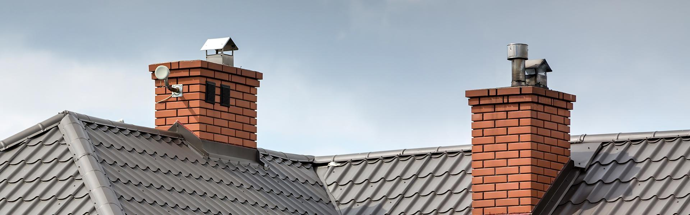
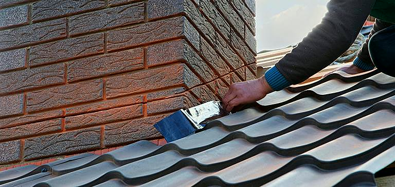
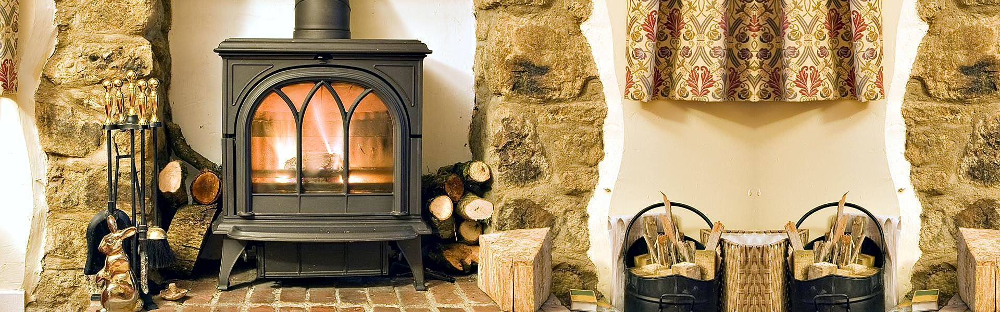
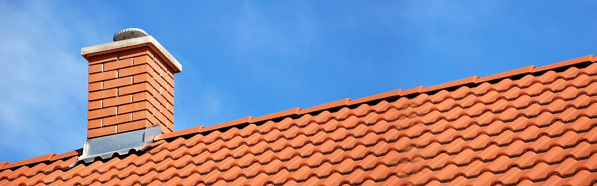
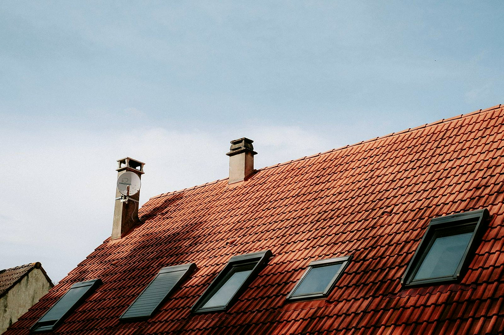
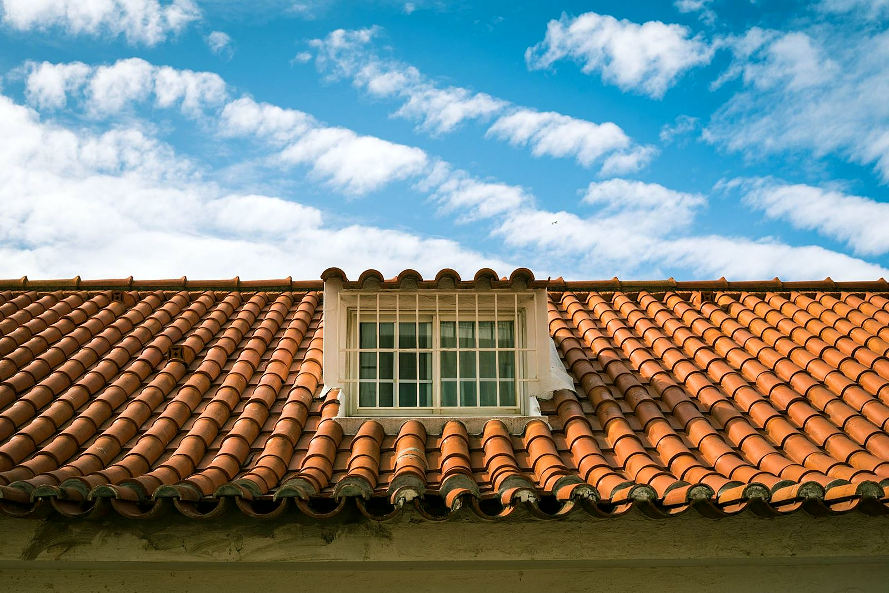

Dbamy o kominy, żeby ciągnęły bez obaw
Czyścimy, frezujemy i uszczelniamy kominy, montujemy wkłady i robimy przeglądy.
Zadzwoń teraz +48 726 189 777- Kominy murowane i systemowe
- Domy prywatne i firmy
- Szczecin, Poznań, Trójmiasto
Co się dzieje z kominem?
Opisz problem przez telefon. Umówimy się na oględziny i powiemy, czy wystarczy czyszczenie, czy trzeba frezować, uszczelniać albo dać wkład.
Wiesz, na czym stoisz - na każdym etapie
Od pierwszego telefonu do odbioru roboty - krok po kroku.
- 01
Telefon
Mówisz, jaki masz komin i co się z nim dzieje. Ustalamy termin oględzin.
- 02
Oględziny
Sprawdzamy przewód na miejscu i podajemy zakres prac oraz cenę, zanim cokolwiek zaczniemy.
- 03
Praca przy kominie
Czyścimy, frezujemy, uszczelniamy albo montujemy wkład, zależnie od tego, co wyszło na oględzinach.
- 04
Odbiór
Pokazujemy, co zostało zrobione, i podpowiadamy, jak dbać o komin do następnej wizyty.
Przy kominach
Wkłady stalowe, nasady, prace na dachu i kominy, którymi się zajmujemy.





Kominy od środka i od zewnątrz
To, po co dzwonią do mnie najczęściej. Szczegóły i ceny niżej.
- Czyszczenie kominaUsuwamy sadzę i osady z przewodów dymowych, spalinowych i wentylacyjnych, żeby spaliny uchodziły tak, jak powinny.Wycena →
- Frezowanie kominaRozwiercamy przewód frezem, gdy jest za wąski na wkład albo zarośnięty.Wycena →
- Montaż wkładów kominowychWpuszczamy wkład do istniejącego komina pod kocioł, piec albo kominek i wyprowadzamy go nad dach.Wycena →
- Uszczelnianie i szlamowanieUszczelniamy kominy i przewody wentylacyjne masą uszczelniającą dobrej jakości.Wycena →
- Przeglądy kominówSprawdzamy stan przewodów i mówimy wprost, co jest do zrobienia teraz, a co może poczekać.Wycena →
- Przemurowanie kominaOdnawiamy zniszczoną część komina nad dachem: cegła, czapa i obróbka przy pokryciu.Wycena →
Co mówią klienci
Opinie o nas znajdziesz w naszej wizytówce Google.
Dojeżdżamy do Ciebie
Baza w Szczecinie, ul. Stalmacha 2/52. Pracujemy w Szczecinie i okolicach, a także w Poznaniu i w Trójmieście. Zapytaj o swoją miejscowość przez telefon.
- Szczecin
- + okolice
Potrzebujesz fachowca? Wycenimy za darmo.
Napisz, co jest do zrobienia - obejrzymy na miejscu i wycenimy. Bez zobowiązań.